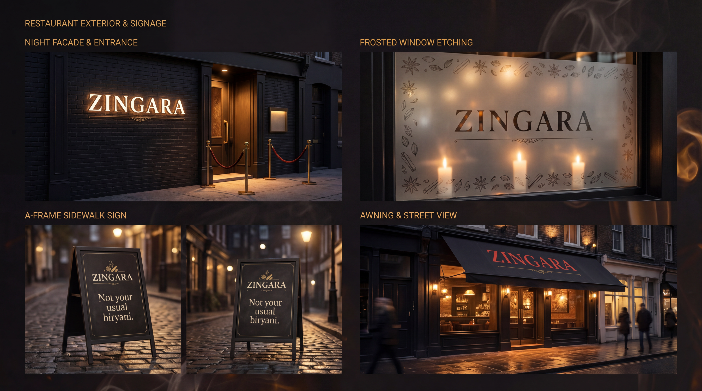
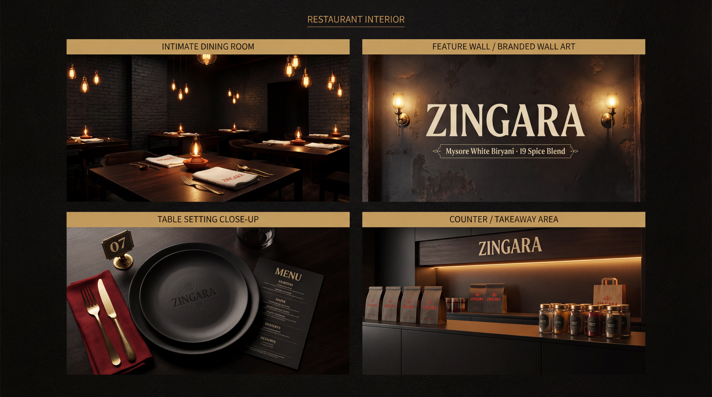
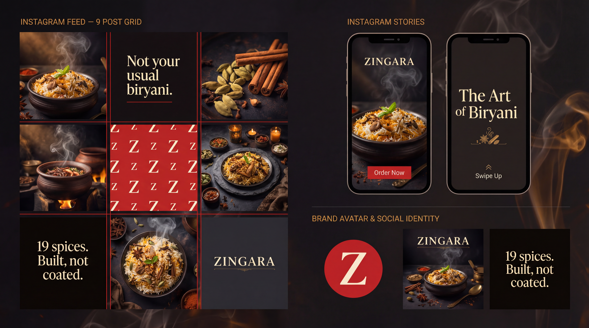
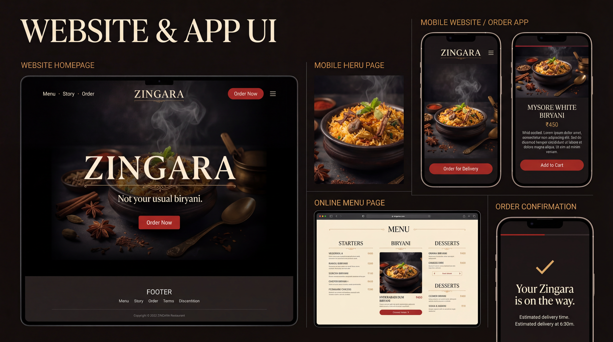

A glimpse into the Zingara experience




White biryani is an act of restraint. It's not the absence of flavour — it's the discipline to let flavour speak without colour crutches. At Zingara, our white biryani is cooked without any artificial colouring or food dyes. The cream hue comes from milk, ghee, and jeera rice. The flavour comes from 19 spices ground fresh every morning.
Our 19-spice blend is not a recipe. It's a ritual. Sourced from Mysore's spice markets, ground by hand in our kitchen each morning. The proportions have been refined over years. Some spices carry heat, some carry aroma, some carry depth. Together they form the backbone of everything we cook.
The biryani world is obsessed with colour — saffron yellows, turmeric oranges, food-dye reds. We think that's a distraction. Colour in food is a signal, and we want our signal to be flavour. When you see white biryani, you know exactly what you're getting: a cook who trusts the process.
Dum is a Persian cooking technique where food is sealed in a pot and slow-cooked over low heat. The pressure inside builds gradually, infusing every grain of rice with the flavours of the spices and the meat. At Zingara, we dum cook every biryani in a traditional handi. No shortcuts. No pressure cookers.